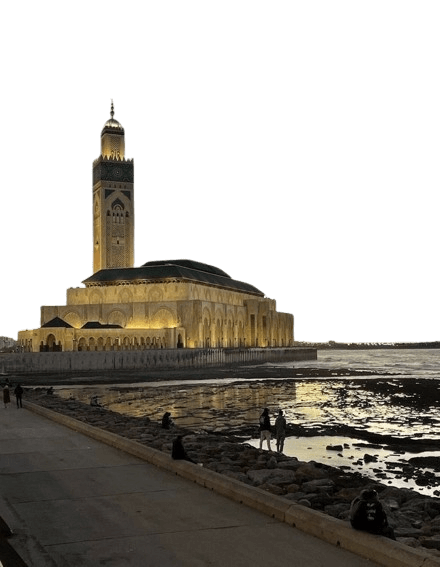
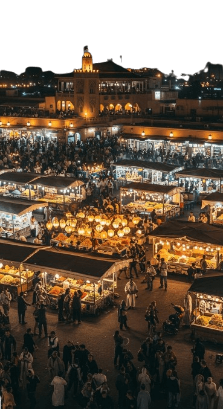
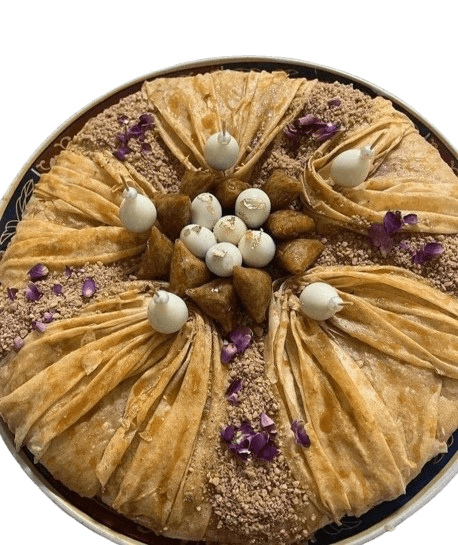
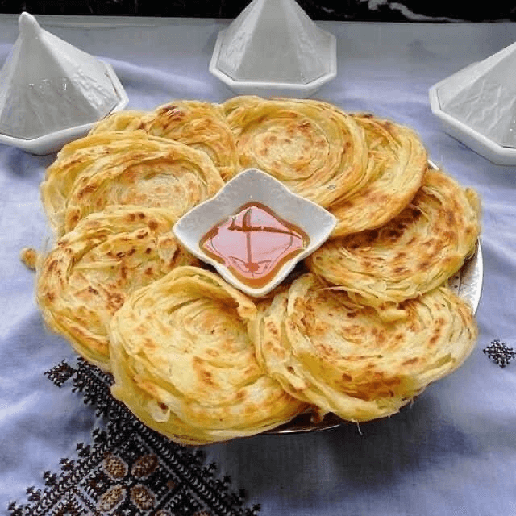
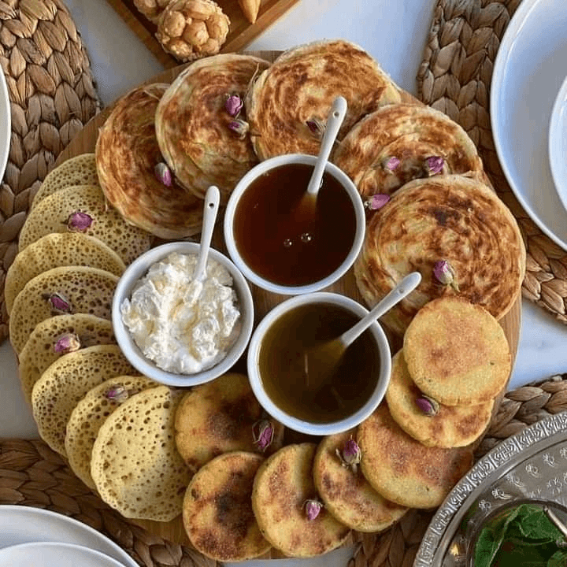

Casablanca

Casablanca est la plus grande ville du Maroc, connue pour sa modernité, sa corniche et la Mosquée Hassan II.

Casablanca est la plus grande ville du Maroc, connue pour sa modernité, sa corniche et la Mosquée Hassan II.

Marrakech, la ville rouge, est célèbre pour sa place Jamaa El-Fna, ses souks et ses jardins colorés.

Ouarzazate est connue comme la porte du désert. On y trouve la Kasbah d'Ait Ben Haddou, classée à l'UNESCO.







Un plateau marocain typique composé de msemen, baghrir, harcha et de miel, accompagné du thé à la menthe.